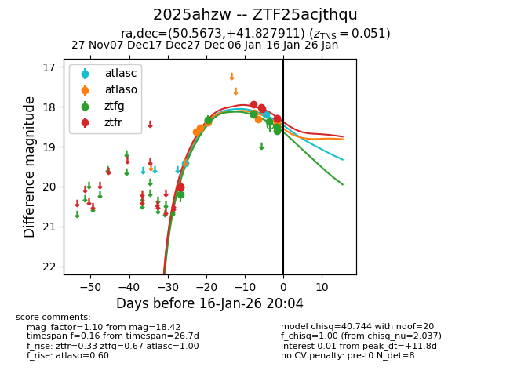
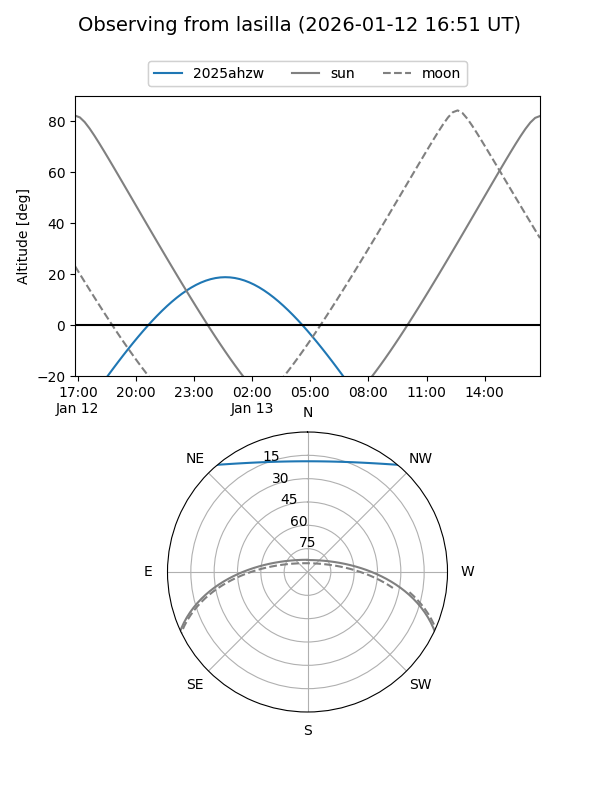
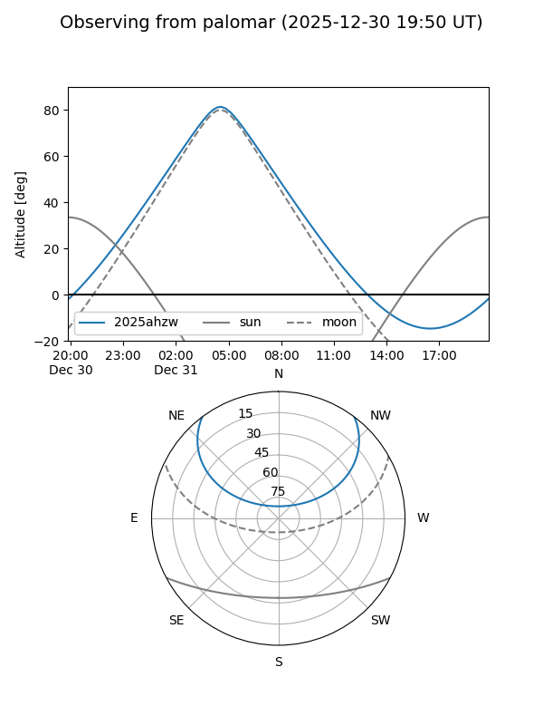
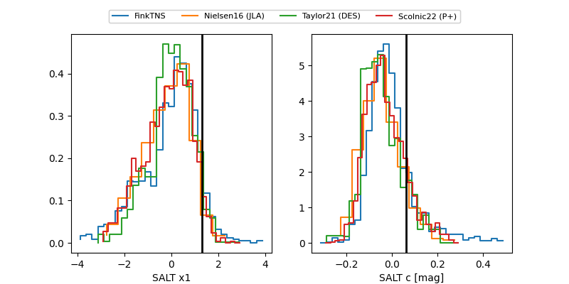

2025ahzw
Target 2025ahzw at 2026-01-12 19:30
Aliases and brokers:
FINK: link
Lasair: link
ALeRCE: link
TNS: link
YSE: link
alt names
ZTF25acjthqu (ztf,fink_ztf)
2025ahzw (tns,yse)
Coordinates:
equatorial (ra, dec) = 50.5673,+41.82791
equatorial (HMS+DMS) = 03:22:16.16,+41:49:40.48
galactic (l, b) = (150.7891,-12.74257)
Flags:
confirmed ia
Photometry:
last atlasc=19.40, atlaso=18.30, ztfg=18.17, ztfr=18.06
1 atlasc, 5 atlaso, 4 ztfg, 5 ztfr detections
Lightcurve

Visibility


Additional plots
